Run the whole system on your computer and check every feature yourself, with the results to expect.
Contents
Credential Navigator has four parts, all started together by one command (Figure 1). The portal is the website applicants see. It sends their answers to the API, which compares them with the regulator data held in a PostgreSQL database and sends back a roadmap. Nothing about the applicant is stored: the database holds only the regulators' rules.
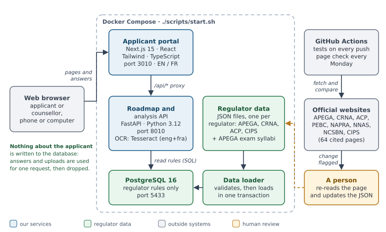
Portal (port 3010): Next.js website in English and French; forwards /api/* calls to the API.
API (port 8010): FastAPI service that builds roadmaps and reads uploaded PDFs, with Tesseract OCR for scans.
Database (port 5433): PostgreSQL with the requirements, fees, timelines and syllabi of APEGA, the CRNA, the ACP and CIPS.
Data loader: checks the regulator files, then loads them in one go when the system starts.
No AI writes or changes the rules. A person reads each official page and records the fact with its link and date; the files are validated before loading, and a weekly check flags any page that changes (Figure 2).
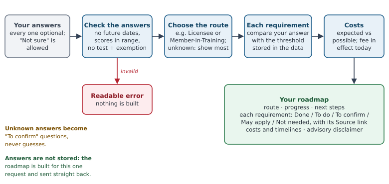
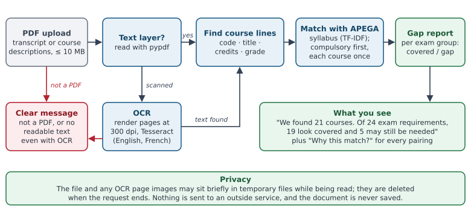
cd /mnt/c/Users/M70Q/Desktop/CredentialNavigator && ./scripts/start.sh| What | Where |
|---|---|
| Applicant portal | http://localhost:3010 |
| API (every endpoint, try it in the browser) | http://localhost:8010/docs |
| Test documents to upload | C:\Users\M70Q\Desktop\CredentialNavigator\backend\tests\fixtures |
| Stop (data kept) | ./scripts/start.sh --stop |
| Start completely fresh | ./scripts/start.sh --reset |

MATH 201.Go to Engineering (APEGA), answer as shown (leave everything else as "Not sure"), and click Show my roadmap. Reload the page between scenarios.
| # | Answers | What you should see |
|---|---|---|
| E1 | 60 months · citizen/PR Yes · CEAB Yes · NPPE Yes · English Yes · References Yes | Route Professional Member (P.Eng.). 6 of 9 done. Expected cost CAD 500.00; no "possible" costs. Exams by the Board: "Not needed". |
| E2 | 72 months · citizen/PR No · CEAB No | Route Licensee. No citizenship requirement listed. Degree: "Order a WES Course-by-Course ICAP report". Expected CAD 750.00; possible CAD 575.00 + USD 225.00 (FE and technical exams). |
| E3 | 20 months · CEAB No | Route Member-in-Training. A cost note says APEGA's MIT application fee isn't published. |
| E4 | Nothing answered | No route yet; a note asks you to answer the "to confirm" items. Experience asks "How many months… 48 are required." |
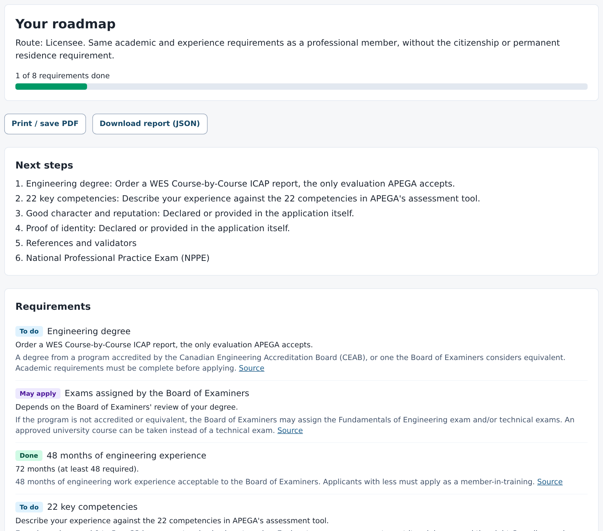
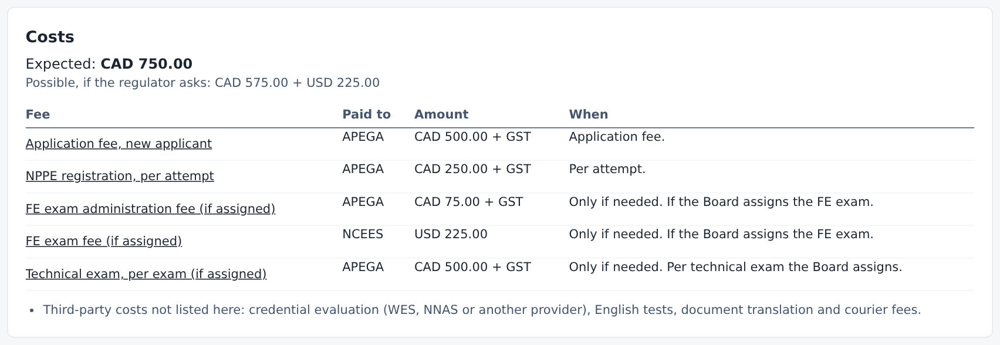
On the same page, scroll to Compare your courses with APEGA's syllabus, choose Mechanical Engineering, pick a file and click Compare.
| # | File | What you should see |
|---|---|---|
| U1 | mechanical_course_descriptions.pdf |
21 courses found; of 24 exam requirements, 19 look covered and 5 may be needed. Group A all covered (e.g. MECH 310 for Applied Thermodynamics). Complementary Studies: 3 may be needed (no economics, society or management course). Group B: 1 may be needed. |
| U2 | mechanical_transcript.pdf |
6 courses. A note says most courses have only a title and suggests uploading course descriptions. |
| U3 | mechanical_transcript_scanned.pdf (a scan) |
Takes a few seconds. Note: "read with OCR". Open Courses we read from your document: all 6 courses with grades, e.g. PHYS 101 (B+). |
| U4 | scanned_like.pdf (a blank scan) |
A red message: no readable text was found, even with OCR. |
| U5 | Any non-PDF file (e.g. a .docx) | The file picker only offers PDFs; if forced, the message says the file is not a PDF. |
| U6 | U1 again with Software Engineering | Of 25 exam requirements only 9 look covered and 16 may be needed, including all 7 of Group A: a mechanical degree doesn't cover the software exams. |

Go to Nursing (CRNA). Reload between scenarios.
| # | Answers | What you should see |
|---|---|---|
| N1 | NCLEX Yes · report: Education credential assessment · 900 hours (2 years) · no test, exemption Yes · all four checks/courses Yes | Route Already passed the NCLEX-RN. 9 of 13 done. Expected CAD 666.75 (account CAD 183.75 + permit CAD 483.00). |
| N2 | NCLEX No · report: None yet · 300 hours (2 years) · 1000 hours (5 years) · program No | Currency of practice: "150 more hours within 2 years or 125 more hours within 5 years". Credential assessment lists the five accepted providers. Expected CAD 1,026.75 (includes NCLEX CAD 360.00). |
| N3 | IELTS Academic taken 2024-01-15: 8 / 7.5 / 7 / 7.5 / 7.5 | English: "Scores meet the minimums but expired on 2026-01-15." |
| N4 | IELTS Academic taken 2026-03-01, writing 6, others 7–8 | English: "Below the minimum: writing 6.0 (needs 6.5)." |
| N5 | CELBAN taken 2026-05-01: listening 9, reading 8, writing 7, speaking 8 | English: Done, "valid until 2028-05-01". CELBAN has no overall score field. |
| N6 | Report: NNAS · rating: Not comparable | Credential assessment: "Not equivalent: the CRNA refers the application to the registrar." |
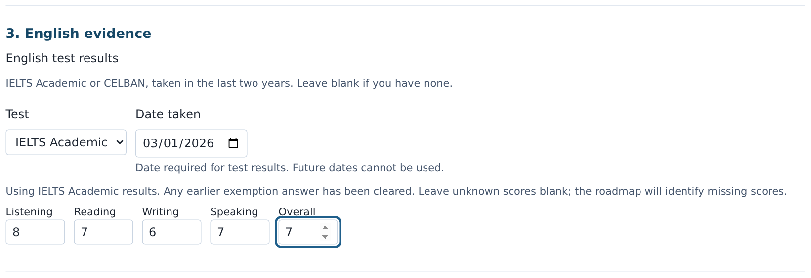
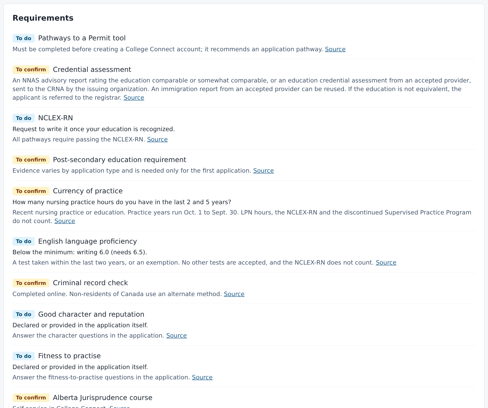
Go to Pharmacy (ACP). Reload between scenarios. Each requirement carries a grey label: Provisional register or Clinical register.
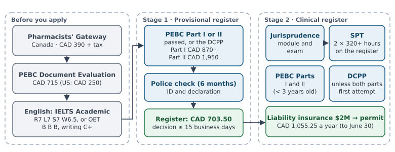
| # | Answers | What you should see |
|---|---|---|
| P1 | US PharmD No · Gateway No · Document Evaluation No · Test OET, taken 2026-01-10: listening B, reading B, writing C, speaking B | Route Internationally educated pharmacist. English: "Below the minimum: writing C (needs C+)." Expected CAD 5,683.75; possible CAD 777.00 (pro-rated permit and a jurisprudence rewrite). |
| P2 | US PharmD No · Gateway Yes · Document Evaluation Yes · Part I Yes · Part II No · IELTS Academic 2025-11-01: listening 7.5, reading 7, writing 6.5, speaking 7 · police check Yes · provisional register Yes · jurisprudence Yes · SPT experiences 1 | 6 of 11 done. SPT: "1 more practical experience of at least 320 hours…". PEBC: "Still to pass: Part II (OSCE)." English: done, valid until 2027-11-01. Expected CAD 3,005.25. |
| P3 | Part I Yes · Part II Yes · then the new question "Did you pass both parts on your first attempt?" Yes | The first-attempt question appears only after both parts are Yes. DCPP: Not needed ("Exempt: both PEBC parts passed on the first attempt"). |
| P4 | US PharmD Yes (nothing else) | Route US Doctor of Pharmacy (ACPE-accredited). The DCPP question disappears and DCPP is not in the list. English: Not needed. Expected CAD 5,218.75 (US Document Evaluation CAD 250.00). |
| P5 | IELTS Academic with reading 6.5, others 7 | There is no "overall" box (the national policy ignores it). English: "Below the minimum: reading 6.5 (needs 7.0)." Writing 6.5 is enough. |


Go to Computing (CIPS). The blue box at the top says computing jobs aren't regulated, that the I.S.P. is voluntary, and links to the engineering page for software engineers.
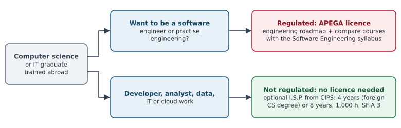
| # | Answers | What you should see |
|---|---|---|
| C1 | Education: "Other 4-year university degree in computer science…" · 3 years · 1900 hours | Route Education route. Experience: "1 more year of IT work needed (4 in total)." Current IT work: done. Expected CAD 623.00 + GST; possible CAD 75.00. |
| C2 | As C1 but 5 years · SFIA level 3 Yes · recent graduate No · all four application questions Yes | 6 of 7 done (only the application itself is left). Experience: "5 years (at least 4 needed)…". |
| C3 | Same education · recent graduate Yes (nothing else) | Review fee is the recent graduate fee CAD 75.00; expected CAD 423.00. |
| C4 | Education: "A degree or diploma in another field, or none" · 6 years · 600 hours | Route Experience-only route. "2 more years of IT work needed (8 in total)." "400 more hours of IT work within 12 months." |
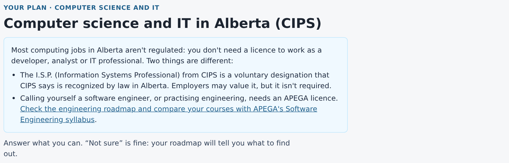
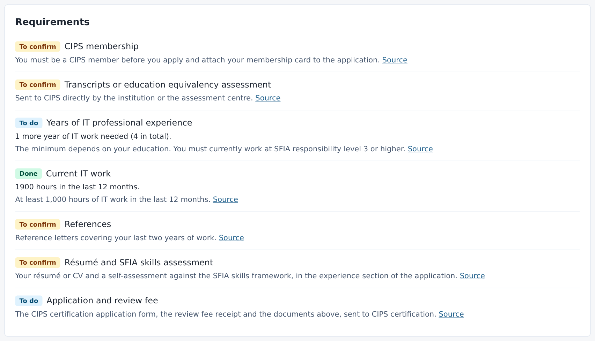
The disclaimer under every CIPS roadmap says the I.S.P. is voluntary, and the first cost note says that only APEGA licenses software engineers.
| # | Do this | What you should see |
|---|---|---|
| F1 | Click Français in the menu | Everything you can click or read in the interface turns French: "Votre parcours vers l'autorisation d'exercer en Alberta". The button now says English. |
| F2 | Go to Soins infirmiers, answer "Avez-vous réussi le NCLEX-RN?" Oui, click Afficher ma feuille de route | "Votre feuille de route", status chips in French (Fait, À faire, À confirmer), a blue note that the requirements are shown in English as on the regulators' sites, and amounts written the French way: 666,75 CAD. |
| F3 | Reload the page, then click English | French is remembered after the reload; English comes back with one click. |
| V1 | Click Privacy in the footer of any page | What is and isn't kept: no accounts, no cookies, no analytics, no outside AI, uploads deleted after reading, drafts only if you tick the box. Also in French. |
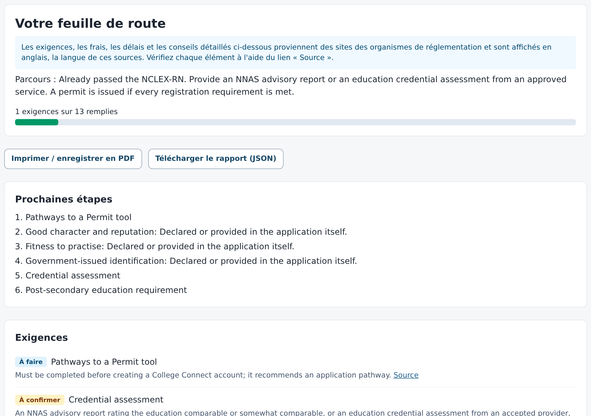
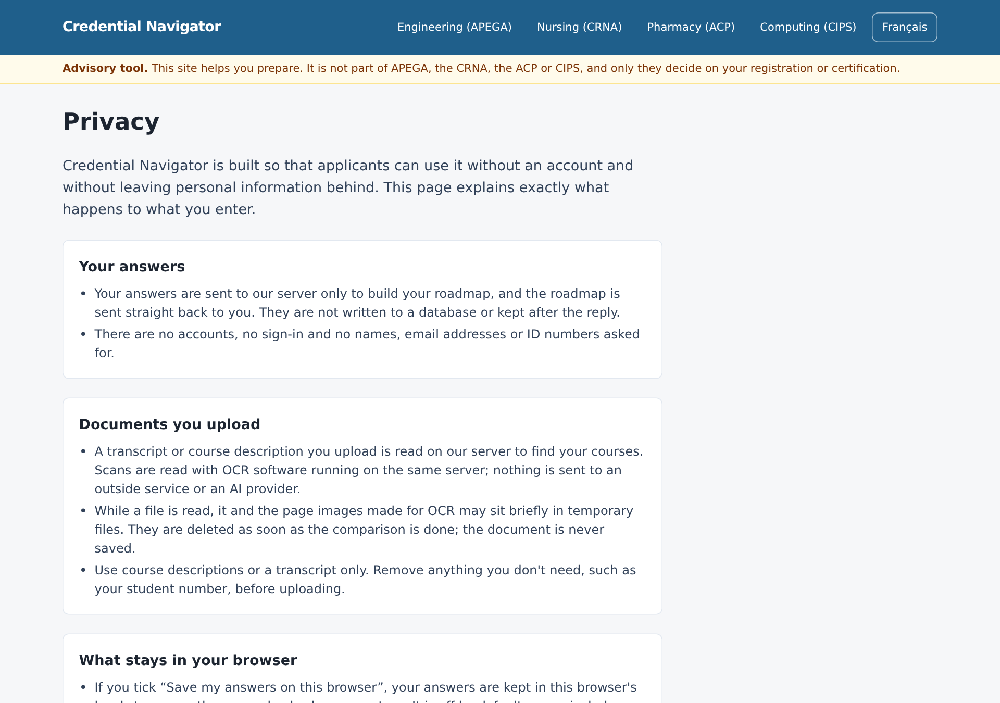
POST /roadmap/crna → Try it out → send {"nclex_passed": true}../scripts/start.sh --stop and start again: it comes back with the data already loaded.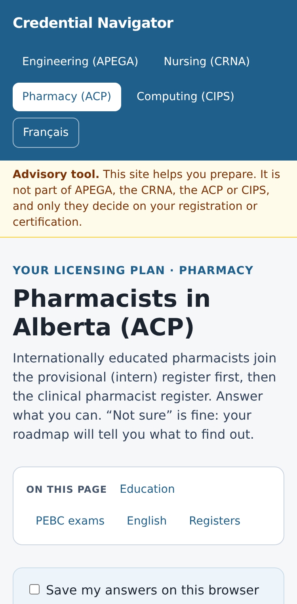
With the system running, from the frontend folder: npm install --no-save playwright @axe-core/playwright && npx playwright install chromium && node tests/e2e.cjs. It opens Chromium and runs 11 checks: all four professions, the three uploads, privacy, French, accessibility and phone width. HEADLESS=1 node tests/regressions.cjs adds 15 regression scenarios (drafts, stale results, validation, export).